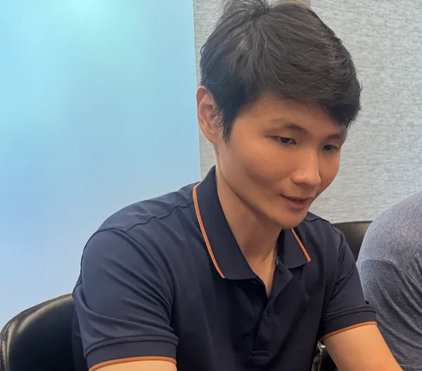

Coaching Profile · Big Five (OCEAN)
Trac Nguyen
Built from 1:1 coaching session transcripts.

Coaching Profile · Big Five (OCEAN)
Built from 1:1 coaching session transcripts.
Each dimension rated with behavioral evidence from the sessions.
Trac is a calm, self-directed technical contributor who does excellent work without needing recognition or close supervision. He thinks in systems, plans ahead, and stays steady under pressure - rare qualities in a fast-moving startup. He's genuinely curious and will explore new tools on his own time, but he doesn't volunteer opinions or flag concerns unless asked. His contributions can be invisible if you're not paying close attention, which means his value is easy to underestimate and his blockers are easy to miss.
Tone
Keep it peer-level and technical. He doesn't need motivation or cheerleading - he needs intellectual engagement. Talk to him like a fellow problem-solver, not a direct report.
Feedback delivery
Be specific and concrete. He won't read between the lines or pick up on hints. If something needs to change, say it plainly. He'll receive it without defensiveness.
Pacing
Give him space to work - he doesn't need frequent check-ins. But build in explicit moments to surface blockers, because he won't raise them proactively. A direct "what's in your way?" in every 1:1 is more useful than waiting for him to bring it up.
Challenge level
Push him toward communication and visibility, not harder technical work. His growth edge isn't skill - it's making sure his work and concerns are seen. Encourage him to share progress and opinions before he's asked, and acknowledge it when he does.
Draft - to be polished. Reviewed in every 1:1.
50% of Infinite Leverage retreat participants actively using their Blueprint to run a business or business function within 90 days of each retreat - by December 31, 2026.
Directly owns OKR 3 / KR4. Track participant activation rate after each retreat cohort. Surface usage data and blockers in every 1:1 so issues are caught within the 90-day window, not after.
Build an AI agent for every repetitive task in his role by December 31, 2026.
For every recurring engineering or delivery task - testing, reporting, code review prep, progress tracking - Trac identifies it, maps the workflow, and builds an agent to handle it. Target: at least one new automated workflow per month. Review in every 1:1: what's still manual that shouldn't be?